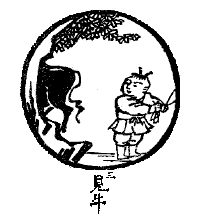

BuddhaSasana Home Page
This document is written in Vietnamese, with Unicode Times
font
 Dẫn
Từ tiếng được vào, chỗ thấy liền đúng. Cửa sáu căn rành rõ không sai, trong động dụng rành rành hiển lộ. Chất muối trong nước, sắc xanh trong keo. Vén chân mày lên chẳng phải vật khác.
Giảng Giải
Trâu chỉ cho Tánh Giác không sanh không diệt sẵn có nơi mỗi người.
Từ tiếng được vào, chỗ thấy liền đúng: Khi nghe tiếng không chạy theo tiếng để phân biệt hay dở, nhân khi nghe tiếng nhận ra nơi mình có Tánh nghe, đó là cửa từ Quan Âm vào. Ở nơi mắt sẵn có Tánh thấy là cái chân thật, ở nơi mũi, nơi lưỡi cũng có cái chân thật nên nói: Cửa sáu căn rành rõ không sai. Nơi mắt, tai, mũi, lưỡi, thân ý lúc nào cũng có Tánh Giác chân thật hiện tiền không mất.
Trong động dụng rành rành hiển lộ: Tánh giác hiển hiện nơi mọi động dụng của con người đâu có lúc nào thiếu vắng. Nhưng vừa động dụng là có vọng thức xen tạp, nên người không sáng là không nhận ra được. Ðây dùng ví dụ Chất muối trong nước, sắc xanh trong keo: Ngay trong nước biển có muối mà ít người biết, phải chờ đem nước lên ruộng, nước bốc hơi, muối đọng lại, thấy muối mới có tin trong nước biển có muối. Sắc xanh hòa với adao, trong hợp chất đó có lẫn trong nhau mà chúng ta không phân biệt được. Cũng vậy khi sáu căn tiếp xúc với sáu trần, chúng ta không nhận ra Tánh thấy, Tánh nghe... là cái chân thật đang hiện hữu mà chỉ biết có nhãn thức hoặc nhĩ thức... phân biệt đẹp xấu hay dở. Nếu ngay nơi sáu căn sẵn có Tánh thấy, Tánh nghe chân thật mà nhận được thể tánh chân thật ấy đó là thấy trâu. Nên nói: Vén chân mày lên chẳng phải vật khác. Vén lông mày lên thì mắt thấy rõ chứ gì! Phải không??? Thấy trâu là nhận nơi mình có thể tánh chân thật lúc nào cũng hiển lộ nơi sáu căn.
Tụng
Hoàng Li chi thượng nhất thanh thanh
Nhật noãn phong hòa ngạn liễu thanh
Chỉ thử cánh vô hồi tị xứ
Sân sân đầu giác họa nan thànhDịch
Hoàng anh cất tiếng hót trên cành
Nắng ấm gió hòa bờ liễu xanh
Chỉ thế, không nơi xoay trở lại
Ðầu sừng rành rõ vẽ khôn thànhGiảng Giải
Trên cành cây, chim hoàng anh hót từng tiếng, từng tiếng. Trời ấm, gió mát, trên bờ có rặng liễu xanh. Chỉ ở đây, không có chỗ xoay lại được nữa. Rõ ràng trâu hiện đầu sừng ra rồi mà vẽ không được.
Ngay khi mắt thấy sắc, tai nghe tiếng, mũi ngửi mùi, lưỡi nếm vị, không khởi thức phân biệt đẹp xấu, hay dở, thấy chỉ thấy, nghe chỉ nghe...ngay khi đó Tánh thấy, Tánh nghe đang hiện hữu rõ ràng. Thể Tánh chân thật hiển hiện rõ ràng mà không diễn tả được.
[Lời Tựa]
Tranh Thiền Tông: [1] [2] [3] [4] [5] [6] [7]
[8] [9] [10]